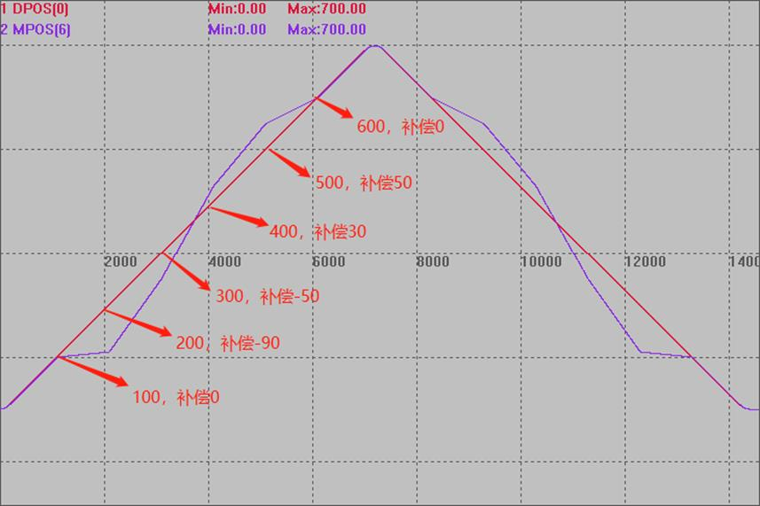
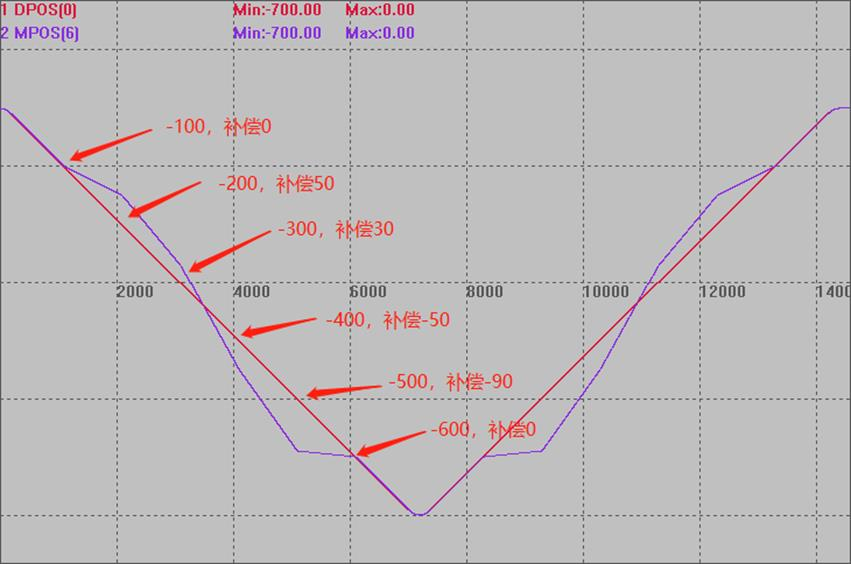
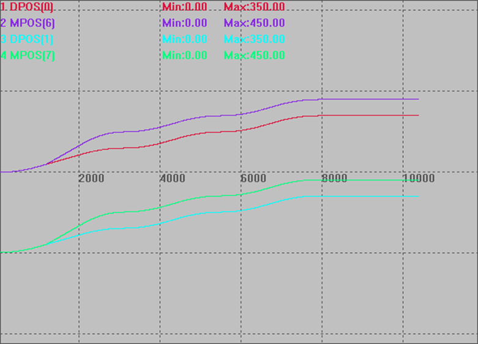

|
类型 |
运动设置指令 |
|
描述 |
设置轴的螺距补偿，扩展轴无效。 每点的补偿脉冲个数存储在TABLE表里面。 |
|
语法 |
PITCHSET(enable [,startpos,disone,maxpoint,tablenum] [,tablereverse]) enable：使能与否 startpos：开始补偿的mpos位置，units单位，startpos对应的点不存储 disone：每个点之间的距离，units单位 maxpoint：补偿的总点数 tablenum：螺距补偿表存储的table位置，从startpos下一个点开始存储，脉冲数单位，存储的都是当前点相对于第一个点的绝对补偿脉冲数 tablereverse：正向反向不一样的补偿值的情况下使用，螺距补偿表存储的table位置
支持动态修改补偿参数; 补偿开始或关闭时, 调整dpos,mpos, 而不是产生运动使得dpos,mpos正确. 距离参数不能设置负数, 否则补偿将完全不起作用. 不管电机行走方向如何, pitset设置的方向永远是正向的. 一维补偿指令没有缓冲区, 一次下载一条补偿指令, 不能同时下载多条, 否则第一条将被取消. 反向时如果补偿表和正向时不一致,可以使用指令中的tablereverse参数来设置反向时的补偿表 |
|
适用控制器 |
通用 |
|
例子 |
单轴螺距补偿： 例一： ATYPE(6)=6 UNITS(6)=100 DPOS(6)=0
BASE(0) ATYPE=1 UNITS=100 SPEED=100 ACCEL=500 DECEL=500 TABLE(0,0*UNITS(0),-90*UNITS(0),-50*UNITS(0),30*UNITS(0),50*UNITS(0),0) 'TBALE存贮螺距补偿值，补偿值是脉冲个数，不是补偿距离值 DPOS=0 MPOS=0 '//开始补偿位置（MPOS） 补偿值（距离100时的脉冲个数） '// 100 0 '// 200 -90个脉冲 '// 300 -50个脉冲 '// 400 30个脉冲 '// 500 50个脉冲 '// 600 0 PITCHSET(1,0,100,6,0) 'MPOS=0时，开始补偿6个点，间隔100 TRIGGER MOVE(700) MOVE(-700) WAIT IDLE PITCHSET(0,100,100,6,0)
该波形图，为了更好的显示补偿效果，把轴0的脉冲输出，接入到了轴6的编码器输入上，方便观察规划位置以及实际位置的区别，以看出补偿效果 DPOS(0)偏移-300，垂直刻度200 MPOS(6)偏移-300，垂直刻度200 
例二： ATYPE(6)=6 UNITS(6)=100 DPOS(6)=0
BASE(0) ATYPE=1 UNITS=100 SPEED=100 ACCEL=500 DECEL=500 TABLE(0,0*UNITS(0),-90*UNITS(0),-50*UNITS(0),30*UNITS(0),50*UNITS(0),0) 'TBALE存贮螺距补偿值，补偿值是脉冲个数，不是补偿距离值 DPOS=0 MPOS=0 '//开始补偿位置（MPOS） 补偿值（距离100时的脉冲个数） '// -100 0 '// -200 50个脉冲 '// -300 30个脉冲 '// -400 -50个脉冲 '// -500 -90个脉冲 '// -600 0 PITCHSET(1,-700,100,6,0) 'MPOS=-700时，开始补偿6个点，间隔100 TRIGGER MOVE(-700) MOVE(700) WAIT IDLE PITCHSET(0,100,100,6,0)
该波形图，为了更好的显示补偿效果，把轴0的脉冲输出，接入到了轴6的编码器输入上，方便观察规划位置以及实际位置的区别，以看出补偿效果 DPOS(0)偏移300，垂直刻度200 MPOS(6)偏移300，垂直刻度200  例三：多轴螺距补偿 BASE(6,7) UNITS=100,100 SPEED=100,100 ACCEL=100,100 DPOS=0,0 MPOS=0,0
BASE(0,1) ATYPE = 5,5 UNITS=100,100 SPEED=100,100 ACCEL=100,100 DPOS=0,0 MPOS=0,0
TABLE(0,100*UNITS(0),100*UNITS(0),100*UNITS(0)) 'TBALE 存贮螺距补偿值，补偿值是脉冲个数，不是补偿距离值
BASE(0) PITCHSET(0) PITCHSET(1,50,100,3,0) 'MPOS=50 时，开始补偿 3 个点，间隔 100 BASE(1) PITCHSET(0) PITCHSET(1,50,100,3,0) 'MPOS=50 时，开始补偿 3 个点，间隔 100
TRIGGER BASE(0,1) MOVE(150,150) wait IDLE ?PITCH_DIST(0) ?PITCH_DIST(1) MOVE(100,100) wait IDLE ?PITCH_DIST(0) ?PITCH_DIST(1) MOVE(100,100) wait IDLE ?PITCH_DIST(0) ?PITCH_DIST(1)
该波形图，为了更好的显示补偿效果，把轴0/1的脉冲输出，接入到了轴6/7的编码器输入上，方便观察规划位置以及实际位置的区别，以看出补偿效果 DPOS(0)偏移0，垂直刻度500 MPOS(6)偏移-0，垂直刻度500 DPOS(1)偏移-500，垂直刻度500 MPOS(7)偏移-500，垂直刻度500  |
|
相关指令 |